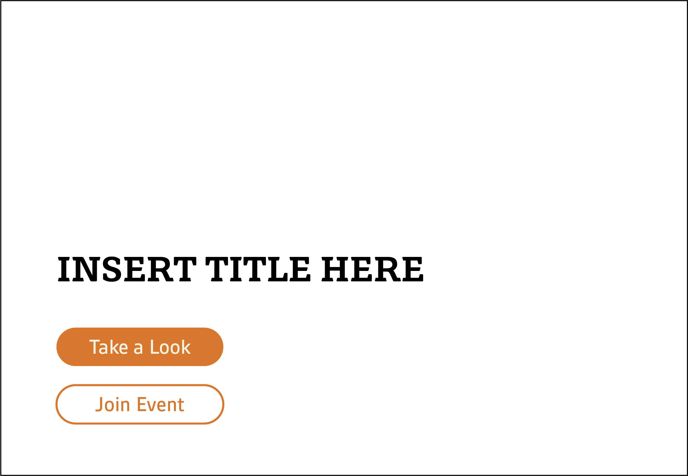

Solution
To reach a solution, two components were necessary: a call to action and a style tile.
Call to Action (CTA)
Once all of the necessary research and planning had been completed, it was time to develop a Call to Action. Since NANI is an inviting organization, it was appropriate to give the CTA(s) an inviting tone. “Take a Look” invites the user to dig a little deeper into the topic at hand, and “Join Event” invites them to actually be a part of what’s going on.
Style Tile
The final step was the style tile. Each of these compositions provides a sample of the overall aesthetic and feel of the new NANI website.
The style tiles feature a variety of elements that deliver an idea of what the final website might look and feel like. The top half of the composition displays what may be the home page when a user first visits the site. They’ll be greeted by an upcoming event and a CTA that prompts them to further action. A navigation bar is spread out across the top, which very well may appear in the final product.
The bottom half of the style tiles feature potential colors, images, buttons, and text layouts that will be featured in the final site as well. The colors were chosen to reflect the adjectives through their soothing and inviting tones. Orange, for instance, is perceived as a very inviting color, and the tan is seen as rather soothing. Both of these colors, along with the rest, bring the adjectives to life. When paired with various buttons, their effects are phenomenal.
As for the type choices, Grueber and Gesta were selected to portray the headings, subheadings, and body copy for the website. Grueber is a slab-serif typeface that reflects the Japanese writing system to a degree, and it comes in pretty thick weights. Thus, it is used for the headings. Gesta, a sans-serif typeface, is used for subheadings and body copy due to its clean design.
Both the English and Japanese style tiles communicate the same message overall. The only major difference between the two is the vertical writing and centered logo in the Japanese version. This was done as a nod to the traditional way of writing Japanese, and also to reflect and increasingly popular web design trend both in Japan and around the world.